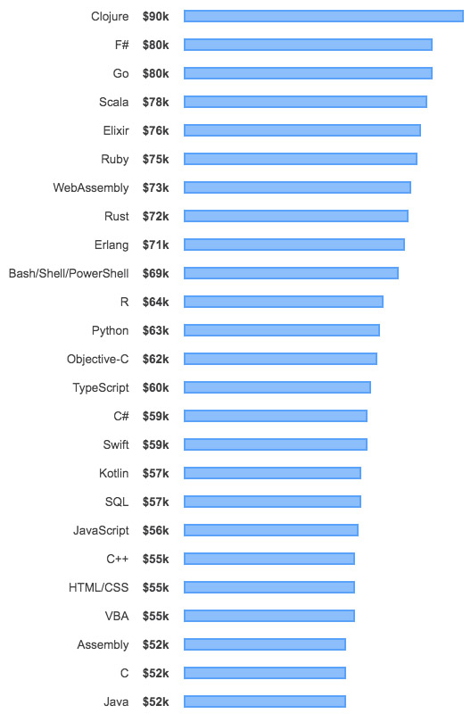

Miscellaneous
Knowledge is Power

Knowledge is Power
Here, we explained this solution step-by-step. Simply, follow all steps to get the desired results. But, keep one thing mind i.e., appropriate use of command prompt can lead to a serious issue.
Step 1: First of all, press Win+R keys together and this will automatically open the Run wizard.
Step 2: Now, type CMD in the given field and press Enter key. This will start Command Prompt on your Windows local machine.
Step 3: Additionally, you have to ensure that your USB flash drive is properly connected to your system and does not open the disk.
Step 4: Subsequently, in Command Prompt, add attrib -h -r -s /s /d E:\*.* command and then hit on Enter key to proceed ahead.
Step 5: Here, you can replace letter E with your own if required. To do so, Navigate to This PC/My Computer after that check the disk letter.
Step 6: Finally, this will delete all shortcut viruses from your USB flash drive without taking too much time.
Have you ever wanted to do something useful with command prompt like chat through a school's network or talk to your friend without having to download any fancy chat software? Now you can with a few simple steps!
Step 1: Open notepad then type:
@ echo off
:A
Cls
echo MESSENGER
set /p n=User:
set /p m=Message:
net send %n% %m%
Pause
Goto A
Step 2: When you're finished, click on file, save as, then save it as messenger.bat.
Step 3: Go to control panel (make sure you are in Classic View). Click on "administrative tools", then click on "services".
Step 4: Now find the "messenger" service in the list on the right, then open it. You'll see "startup type" which should be disabled, so click on that and select "manual".
Step 5: Now press the start button in the upper left hand corner of the window (not the green start button), and click OK.
Step 6: Next, do the same procedure on the remote computer. Until this service is activated on that PC, or you won't be able to use this!
Step 7: Now click on the messenger file you made. Since it is a batch file it will open with cmd (command prompt). It should show "MESSENGER" at the top and "User:" below that. Type the IP address of the remote computer. If it is in the network, then when you type the message next, it should send it to them. It will be likewise on the other computer. There you got it!
To do this we need to launch a command prompt, so press the Win + R key combination and type cmd then hit the enter button.
Now we are going to use the attrib command, so go ahead and type a command similar to the following (you’ll need to substitute the path to your own folder here).
You will need to replace the stuff in quotes to an absolute path of a folder or file on your system that you want to make hidden.
Now if I go look for the Top Secret folder on my Desktop it is gone, even with explorer set to show hidden files and folders.
To unhide the file or folder you can run the same command, except this time use “-“ instead of the “+” signs.
Like magic, my folder appeared again.
Taking into account the wide variety of modern programming languages, deciding which one to start studying can be a difficult task. But if your goal is to master the profession and earn good money using your skills in the future, everything becomes much easier.

Clojure $90k
F# $80k
Go $80k
Scala $78k
Elixer $76k
Ruby $75k
WebAssembly $73k
Rust $72k
Erlang $71k
Bash/Shell/PowerShell $69
R $64k
Python $63k
Object-C $62k
TypeScript $60k
C# $59k
Swift $59k
Kotlin $57k
SQL $57k
JavaScript $56
C++ $55k
HTML/CSS $55k
VBA $55k
Assembly $52k
C $52k
Java $52k
This will teach you how to improve the speed of your Windows PC by using a USB flash drive as virtual RAM. As long as you're using Windows 10, 8, 7, or Vista, Windows comes with a built-in feature that makes it super easy to allocate the entirety of your flash drive as extra memory that can be accessed when needed. Unfortunately there's no equivalent option for macOS.
Insert your blank USB flash drive into the PC.In most cases, a window called "AutoPlay" will pop-up automatically.
Click Speed up my system on the "AutoPlay" window. This opens your USB drive's properties to the ReadyBoost tab.
Select Dedicate this device to ReadyBoost or Use this device. You'll see one of these two options near the top of the ReadyBoost tab.
Click OK. This adds a special cache file to the USB drive that allows it to be used by Windows as additional RAM.
Any disk connected to your PC (whether removeable or integrated) shows up in the disk management tools, and typically Explorer and other desktop applications.
Today, we’re going to hide a partition (or entire disk) for those times you’d rather keep sensitive files out of the prying eyes of casual users who may access your laptop (or desktop). It’ll still be visible in certain tools, like Disk Management, but won’t appear in Explorer or various other programs that might display it.
And if you change your mind later, you can always make it visible again.
No, God Mode doesn’t unlock any extra secret features in Windows or let you do any tweaking that you can’t do in the regular Windows interface. Instead, it’s simply a special folder you can enable that exposes most of Windows’ admin, management, settings, and Control Panel tools in a single, easy-to-scroll-through interface.
And yes, you can also find a lot of this stuff by searching the Start menu, but to do that, you kind of need to know what you’re looking for begin with. The God Mode folder offers an easier way to browse through 206 of these tools and get to know them.
Here are the categories of tools you’ll find in God Mode:
To make this work, you must be using an account with administrative privileges. Go to your desktop and create a new folder by right-clicking any open area, pointing to “New” on the context menu, and then clicking the “Folder” command.
Now, rename the folder to the following:
To use a name other than GodMode, just replace “GodMode” in the above text with whatever you want to name the folder. The characters that follow (including the period) must remain exactly as listed above. If you remove “GodMode” without adding any text in its place, you’ll receive the following error.
Once you’ve properly renamed the folder, you’ll notice the folder icon change to a control panel icon.
Double-click the icon to open the newly-created God Mode. The major categories are organized alphabetically and so are the more than 200 settings you’ll find within those categories.
While it’s certainly handy for getting to know the official names of all the Windows tools, you’ll probably find (like we did) that it’s faster to search for them through the Start menu. Still, the God Mode folder offers a handy introduction to all the tools available and a great way to search for things when you’re not quite sure what they’re named.
Today, we will see how to create blank folder names in Windows. I have used this trick earlier on Windows Vista and Windows 7 – and it now also works on Windows 10/8.1 as well. I do not remember if it worked on Windows XP and earlier.
Using this trick, you can display a folder without a name. There is one caveat, however. Your computer needs to have a Numeric keyboard pad. In case some of you do not know, Numeric keypad or NumPad is the section of the keyboard on the right side, which usually contains 17 keys, viz. 0 to 9, +, -, *, /, ., Num Lock and Enter keys.
To create blank folder names in Windows 10, right-click on the Windows desktop and select New > Folder.
The folder will get created on the desktop.
If you right-click the folder, select Rename and enter only spaces, the operating system will not accept it
To remove the name and display a blank name, right-click on the folder and select Rename. Now press the Alt key and from the Numeric keypad, press 0160.
A folder with no name will be created. Change its icon, and you could have a smart-looking folder on your desktop.
Do not have a NumPad? Check if this forum post on how to have blank folder names in Windows on a laptop without a Numeric pad works for you. Fortunately, my new Dell Inspiron 15 7537 laptop has a numeric pad, so I was easily able to create such name-less folders.
With Windows, you can always customize the look and feel of your system. For instance, you can display a name of your choice in the Windows Taskbar just adjacent to the digital time clock – just for the heck of it! Let us see how to go about it.
The tip may especially interest the younger set. This fun-tip will let you customize the alphabets appearing after the time numerals in the taskbar. Put your name if you wish!
In Windows 8, press Win+X in combination to bring up the Power Task Menu. From it, choose ‘Control Panel’. Then, select Region.
Now, from the ‘Region’ window that appears on your computer screen, select ‘Additional Settings’ button.
Later, from the ‘Customize Format’ window, choose the ‘Time’ tab.
Here, change both the AM and PM letters to any name you wish.
Make sure that the format you are using has “tt” in it.
That is: Time Format = hh:mm:ss tt
Then, simply click on Apply > OK.
If you do not like the changes made, reverse them and restore it to default settings by simply clicking on the reset button or by changing it back manually to AM and PM.
In Windows 7, open Control Panel, select Region and Language > Formats tab > Additional settings button and then in the Customize Format windows which opens, select Time tab and follow the above procedure.
We all have computer files we'd like to keep secret from the world, but not everyone knows how to password protect a folder in Windows 10. Whether you're hiding notes from someone with access to your computer or (hopefully) something less drastic, you're allowed to have some privacy. Fortunately, in Windows 10, you can tuck those unmentionable plans or files in a secret folder that is password protected, and you can do it without buying any additional software. Once you've created a new folder in Windows 10, here's how to password protect it.
cls
@ECHO OFF
title Folder Locker
if EXIST "Control Panel.{21EC2020-3AEA-1069-A2DD-08002B30309D}" goto UNLOCK
if NOT EXIST Locker goto MDLOCKER
:CONFIRM
echo Are you sure u want to Lock the folder(Y/N)
set/p "cho=>"
if %cho%==Y goto LOCK
if %cho%==y goto LOCK
if %cho%==n goto END
if %cho%==N goto END
echo Invalid choice.
goto CONFIRM
:LOCK
ren Locker "Control Panel.{21EC2020-3AEA-1069-A2DD-08002B30309D}"
attrib +h +s "Control Panel.{21EC2020-3AEA-1069-A2DD-08002B30309D}"
echo Folder locked
goto End
:UNLOCK
echo Enter password to Unlock folder
set/p "pass=>"
if NOT %pass%==Your-Password-Here goto FAIL
attrib -h -s "Control Panel.{21EC2020-3AEA-1069-A2DD-08002B30309D}"
ren "Control Panel.{21EC2020-3AEA-1069-A2DD-08002B30309D}" Locker
echo Folder Unlocked successfully
goto End
:FAIL
echo Invalid password
goto end
:MDLOCKER
md Locker
echo Locker created successfully
goto End
:End
goto End
:UNLOCK
echo Enter password to unlok folder
set/p "pass=>"
if NOT %pass%==yourpassword goto FAIL
The Locker folder has been generated!
To unlock the folder, double-click "FolderLocker" to open it.